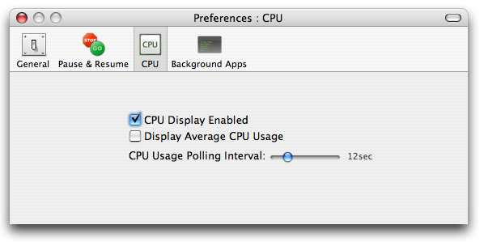

Setting CPU Usage Reporting Preferences
Enabling CPU usage display will enable you to view your application's processor usage and pick out ones that you may want to pause, or perform some other operation on.
Display Average CPU Usage
Enabling this feature will display the average CPU usage of all applications instead of the instantanous CPU usage. The instantanous CPU usage of an application is the usage at the time the application was asked for it's CPU usage, while the average is how much CPU it has used over a long stretch of time.
CPU Usage Polling Interval
This is a important setting that will effect the accuracy of your CPU usage. The smaller the number, the more frequent the application will be asked for its CPU usage (resulting in more accurate CPU usage statistics).
See also
Changing Application's Priority
Pausing An Application
Application Manager Topics